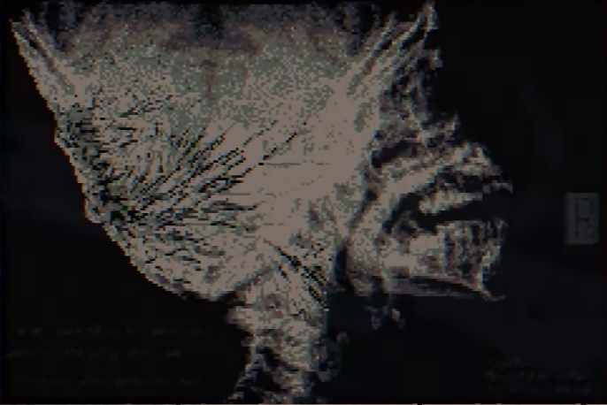
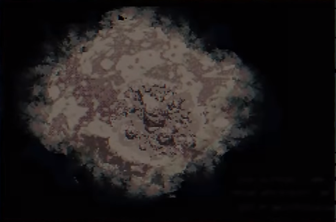

In accordance to the Japanese Imperial Government Disclosure Act (P.L.106-657) and the Executive Order 13110 (Jan. 11, 1999), the following documents have been collected by the U.S. government and put under jurisdiction of the Central Intelligence Agency (CIA) and the Interagency Working Group (IWG), in order to turn records related to Japanese war crimes and war criminals in World War II more accessible
Name: Bai Zihao (Subject 17)
Age: 37
Marital Status: Widowed
Known living relatives: Unknown
Date of Birth: February 17, 1905
Living Status: Deceased
Cause of death: Multiple organ failure
The patient was admitted to Kyushu University Medical School & Hospital presenting with complaints of diffuse bodily pains. Over a 48-hour period, comprehensive clinical evaluations were conducted, and vigilant monitoring was maintained. Preliminary assessments unveiled multifocal discolored burnt lesions distributed throughout the integument, accompanied by parched, fissured epidermis. These clinical manifestations exhibit compelling associations with anthrax infection, wherein the manifestation of fissured integument stands as a prominent hallmark. Additionally, the presence of burn injuries suggests potential exposure to explosive ordnance, conceivably linked to chemical munitions deployed during the Sino-Japanese Conflict.
Over the course of the 48-hour observation period, the pathological trajectory exhibited a precipitous acceleration, characterized by the emergence of anomalous protuberances encircling the cranium, eliciting pronounced cognitive distortion in the patient. Subsequently, these morphological aberrations engendered a progressive alteration in the facial topography, precipitating marked elongation and contortion of facial features. Concomitant with these anatomical transformations, an escalation in hostile behavior towards healthcare personnel ensued, coinciding with the patient's delirious articulation of an overwhelming somatic sensation suggestive of internal parasitic infestation.


An X-ray image of the patient's cranium after the 48-hour observation period.